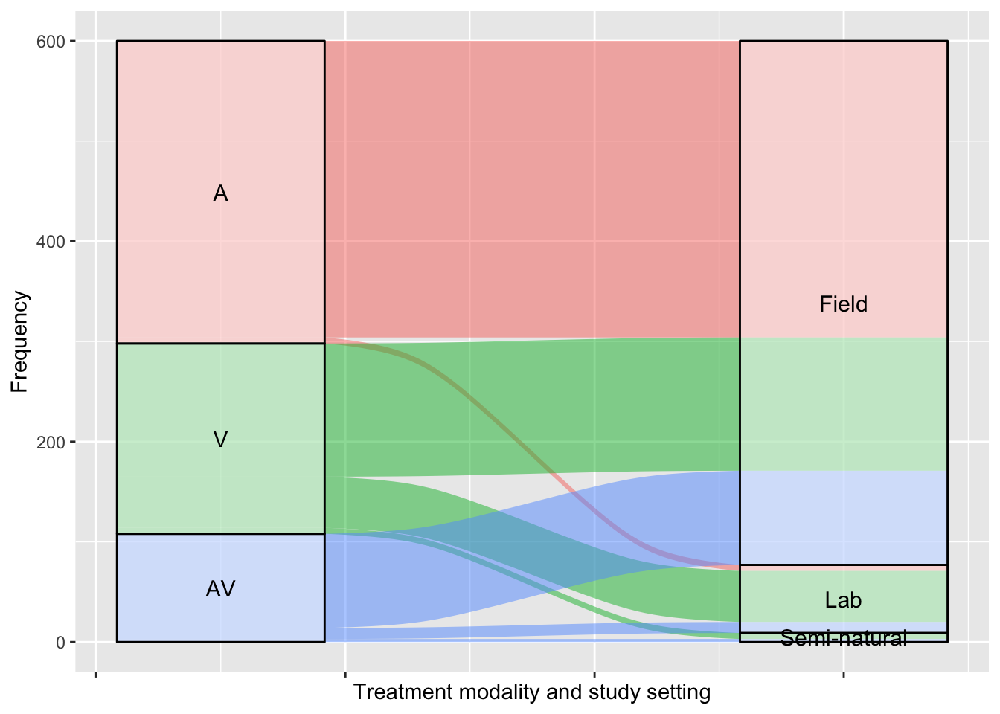
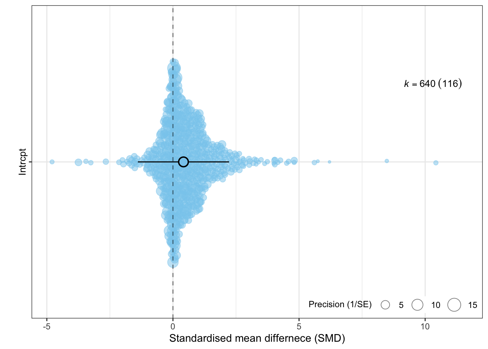
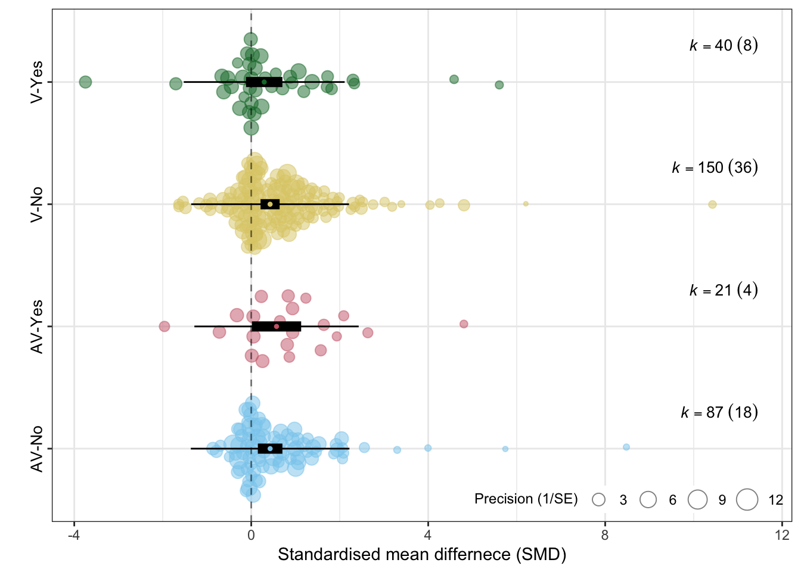
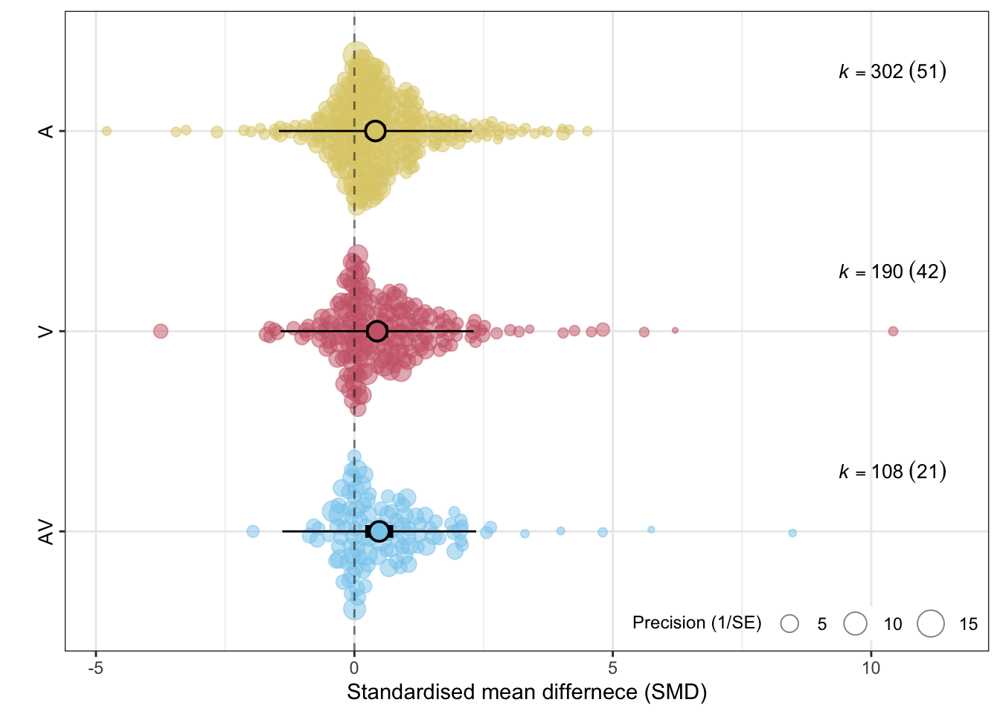
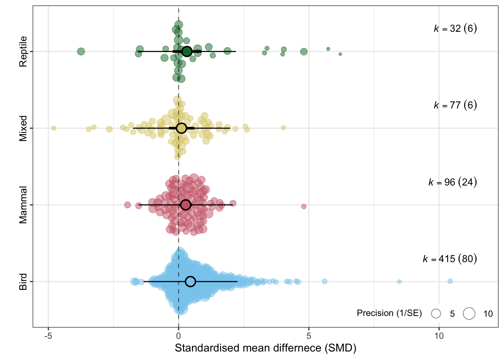

title: “Integration of multimodal cues does not alter mean but reduces variance in avian responses to predators: a systematic review and meta-analysis” author: “Kim + Shinichi et al.” date: “2023-07-28” format: html: toc: true toc-location: left toc-depth: 3 toc-title: “Table of Contents” output-file: “index.html” theme: simplex embed-resources: true code-fold: true code-tools: true number-sections: true #bibliography: ./bib/ref.bib fontsize: “12” max-width: “10” code-overflow: wrap crossref: fig-title: Figure # (default is “Figure”) tbl-title: Table # (default is “Table”) title-delim: — # (default is “:”) fig-prefix: Fig. # (default is “Figure”) tbl-prefix: Tab. # (default is “Table”) editor_options: chunk_output_type: console execute: warning: false message: false tidy: true cache: true —
Setting up
#install.packages("pacman")#pacman::p_load(devtools, tidyverse, metafor, patchwork, R.rsp, emmeans)#devtools::install_github("daniel1noble/orchaRd", force = TRUE)library(tidyverse)
── Attaching core tidyverse packages ──────────────────────── tidyverse 2.0.0 ──
✔ dplyr 1.1.2 ✔ readr 2.1.4
✔ forcats 1.0.0 ✔ stringr 1.5.0
✔ ggplot2 3.4.2 ✔ tibble 3.2.1
✔ lubridate 1.9.2 ✔ tidyr 1.3.0
✔ purrr 1.0.1
── Conflicts ────────────────────────────────────────── tidyverse_conflicts() ──
✖ dplyr::filter() masks stats::filter()
✖ dplyr::lag() masks stats::lag()
ℹ Use the conflicted package (<http://conflicted.r-lib.org/>) to force all conflicts to become errors
library(here)
here() starts at /Users/z3437171/Dropbox/Github Local/multimodality
library(lme4)
Loading required package: Matrix
Attaching package: 'Matrix'
The following objects are masked from 'package:tidyr':
expand, pack, unpack
library(orchaRd)
Loading the 'orchaRd' package (version 2.0). For an
introduction and vignette to the package please see: https://daniel1noble.github.io/orchaRd/
#library(gptstudio)library(metafor)
Loading required package: metadat
Loading required package: numDeriv
Loading the 'metafor' package (version 4.2-0). For an
introduction to the package please type: help(metafor)
Attaching package: 'ape'
The following object is masked from 'package:dplyr':
where
library(clubSandwich)
Registered S3 method overwritten by 'clubSandwich':
method from
bread.mlm sandwich
library(emmeans)library(MuMIn)# making metafor talk to MuMIneval(metafor:::.MuMIn)# install.packages("pak")#pak::pak("MichelNivard/gptstudio")
Getting data loaded
#dat_full <- read.csv(here("data/dat_04_04_2023.csv"))#dat_full <- read.csv(here("data/dat_28_06_2023.csv"))dat_full <-read.csv(here("data/dat_19_07_2023.csv"))# add phylogenetic tree - only topologies# TODO? - we could get better tree from birdtree.org# we can do 50 different trees as in # https://academic.oup.com/sysbio/article/68/4/632/5267840tree_top <-read.tree(here("R/birds_MA.tre"))# tree with branch lengthstree <-compute.brlen(tree_top)#plot(tree)# turning it into a correlation matrixcor_tree <-vcv(tree,corr=T)
Custom functions
# custom functions#' Title: Contrast name generator#'#' @param name: a vector of character stringscont_gen <-function(name) { combination <-combn(name, 2) name_dat <-t(combination) names <-paste(name_dat[, 1], name_dat[, 2], sep ="-")return(names)}#' @title get_pred2: normal model#' @description Function to get CIs (confidence intervals) and PIs (prediction intervals) from rma objects (metafor)#' @param model: rma.mv object #' @param mod: the name of a moderator get_pred <-function (model, mod =" ") { name <-as.factor(str_replace(row.names(model$beta), paste0("relevel", "\\(", mod,", ref = name", "\\)"),"")) len <-length(name)if(len !=1){ newdata <-diag(len) pred <-predict.rma(model, intercept =FALSE, newmods = newdata[,-1]) }else { pred <-predict.rma(model) } estimate <- pred$pred lowerCL <- pred$ci.lb upperCL <- pred$ci.ub lowerPR <- pred$cr.lb upperPR <- pred$cr.ub table <-tibble(name =factor(name, levels = name, labels = name), estimate = estimate,lowerCL = lowerCL, upperCL = upperCL,pval = model$pval,lowerPR = lowerPR, upperPR = upperPR)}
Preparing data set
# function for calculating varianceVd_func <-function(d, n1, n2, design, r =0.5){# independent designif(design =="among"){ var <- (n1 + n2) / (n1*n2) + d^2/ (2* (n1 + n2 -2)) # variance } else { # dependent design var <-2*(1-r) / n1 + d^2/ (2*(n1 -1)) # variance } var # return variance}# getting Hedges' g - get small size bias corrected effect sizedat_full$SMD <- dat_full$d / (1-3/(4* (dat_full$NTreat + dat_full$Ncontrol) -9))# flipping d dat_full$SMD <- dat_full$d*dat_full$Direction*dat_full$PredictedDirection# calucating Vddat_full$Vd <-with(dat_full, pmap_dbl(list(SMD, NTreat, Ncontrol, Design), Vd_func))# extra useful function# function for getting mean and sd from median, quartiles and sample size# get_mean_sd <- function(median, q1, q3, n){# sd <- (q3 - q1) / (2 * (qnorm((0.75 * n - 0.125) / (n + 0.25)))) # sd# mean <- (median + q1 + q3)/3 # mean# c(mean, sd)# }# observation iddat_full$Obs_ID <-1:nrow(dat_full)dat_full$Phylo <-gsub(" ", "_", dat_full$FocalSpL)# filtering very large variance and also very small sample sizedat_int <- dat_full %>%filter(Vd <10& Ncontrol >2& NTreat >2)#dim(dat_full)#dim(dat_int)# sorting out modality stuff# creat - 1,2,3 modality - also easier classification A, O, V (AOV = L) dat_int %>%mutate(Treat_mod =case_when(Treatment =="A"~"A", Treatment =="AV"~"AV", Treatment =="AVG"~"AV", Treatment =="AVM"~"AV", Treatment =="L"~"AVO", Treatment =="O"~"O", Treatment =="OV"~"OV", Treatment =="V"~"V", Treatment =="VG"~"V", Treatment =="VM"~"V", Treatment =="VP"~"V"),# into how manyTreat_No =case_when(Treatment =="A"~1, Treatment =="AV"~2, Treatment =="AVG"~2, Treatment =="AVM"~2, Treatment =="L"~3, Treatment =="O"~1, Treatment =="OV"~2, Treatment =="V"~1, Treatment =="VG"~1, Treatment =="VM"~1, Treatment =="VP"~1),# des it have some add-onsAdd_on =case_when(Treatment =="A"~"No", Treatment =="AV"~"No", Treatment =="AVG"~"Yes", Treatment =="AVM"~"Yes", Treatment =="L"~"No", Treatment =="O"~"No", Treatment =="OV"~"No", Treatment =="V"~"No", Treatment =="VG"~"Yes", Treatment =="VM"~"Yes", Treatment =="VP"~"Yes"), ) -> dat# creating data just for A, V, and AV dat_short <- dat %>%filter(Treat_mod =="A"| Treat_mod =="V"| Treat_mod =="AV")# for add-on, we only need V and AVdat_short_add <- dat %>%filter(Treat_mod =="AV"| Treat_mod =="V")dat <- dat %>%mutate_if(is.character, as.factor)# reordering factors for better visualisation# dat$Treat_mod <- factor(dat$Treat_mod, levels = c("A", "V", "AV", "O", "OV", "AVO"))
Exploratory visualization
For Treat_mod (Treatment), we will only visualise A, V, and AV as O $r $, OV, and AVO are much rarer. But for Type (Trait type), we will use all data.
# Type vs duration_days# turn duration_days into a binary factor: less than 1 and more than 1dat %>%mutate(TDration =case_when(duration_days <1~"< 1 day", duration_days >=1~"> 1 day")) -> datdat %>%group_by(Type, TDration) %>%summarise(n =n()) -> tab2
`summarise()` has grouped output by 'Type'. You can override using the
`.groups` argument.
# using ggaruvialggplot(tab2,aes(y = n,axis1 = Type,axis2 = TDration)) +geom_alluvium(aes(fill = Type)) +geom_stratum(alpha =0.5) +geom_text(stat ="stratum", size =4, aes(label =after_stat(stratum))) +theme(legend.position ="none") +theme(legend.position ="none",axis.text.x =element_blank()) +# remove x-axis labelsylab("Frequency") +xlab("Trait type and duration of treatment")

# Type vs duration_days# turn duration_days into a binary factor: less than 1 and more than 1dat %>%mutate(TDration =case_when(duration_days <1~"< 1 day", duration_days >=1~"> 1 day")) -> datdat %>%group_by(Type, Sex) %>%summarise(n =n()) -> tab
`summarise()` has grouped output by 'Type'. You can override using the
`.groups` argument.
orchard_plot(mod1, mod ="Treat_mod",group ="RecNo", xlab ="Standardised mean differnece (SMD)",branch.size =3)

# doing contrasts# getting the level names outlevel_names <-levels(dat$Treat_mod)# meta-regression: contrasts # helper function to run metafor meta-regressionrun_rma <-function(name) {rma.mv(yi = SMD, V = VCV, mods =~relevel(Treat_mod, ref = name), random =list(~1| FocalSpL,~1| RecNo,~1| Obs_ID),mod =~ Treat_mod -1,test ="t",method ="REML",sparse =TRUE,data = dat)}# results of meta-regression including all contrast results; taking the last level out ([-length(level_names)])mr_Treat_mod <-map(level_names[-length(level_names)], run_rma)
Warning: Extra argument ('mod') disregarded.
Warning: 'V' appears to be not positive definite.
Warning: Extra argument ('mod') disregarded.
Warning: 'V' appears to be not positive definite.
Warning: Extra argument ('mod') disregarded.
Warning: 'V' appears to be not positive definite.
Warning: Extra argument ('mod') disregarded.
Warning: 'V' appears to be not positive definite.
Warning: Extra argument ('mod') disregarded.
Warning: 'V' appears to be not positive definite.
res <-map(mr_Treat_mod, ~get_pred(.x, mod ="Treat_mod"))
Warning in min(x$ddf[bn0]): no non-missing arguments to min; returning Inf
Warning in min(x$ddf[bn0]): no non-missing arguments to min; returning Inf
Warning in min(x$ddf[bn0]): no non-missing arguments to min; returning Inf
Warning in min(x$ddf[bn0]): no non-missing arguments to min; returning Inf
Warning in min(x$ddf[bn0]): no non-missing arguments to min; returning Inf
# testing the number of stimulimod4 <-rma.mv(yi = SMD, V = VCV, random =list(~1|FocalSpL , ~1| RecNo, ~1| Obs_ID), mod =~ Treat_No, test ="t",method ="REML", sparse =TRUE,data = dat)
bubble_plot(mod4,mod ="Treat_No",group ="RecNo",xlab ="The number of simuli",g =TRUE)

Trait type
# Type of responsesmod2 <-rma.mv(yi = SMD, V = VCV, random =list(~1| FocalSpL,~1| RecNo,~1| Obs_ID),mod =~ Type -1,test ="t",method ="REML",sparse =TRUE,data = dat)
# heteroscadasticity model better than the homoscedasticity model# note LifeHistory has lowest variation but this may be expected? # as it is less flexiable (e.g. the number of eggs?)anova(mod2, mod2b)
df AIC BIC AICc logLik LRT pval QE
Full 8 1757.5731 1793.2272 1757.8024 -870.7865 NA
Reduced 6 1785.4590 1812.1996 1785.5923 -886.7295 31.8859 <.0001 NA
orchard_plot(mod2b, mod ="Type",group ="RecNo",xlab ="Standardised mean differnece (SMD)",branch.size =3)
Trait categories
# Category of responsesmod3 <-rma.mv(yi = SMD, V = VCV, random =list(~1|FocalSpL , ~1| RecNo, ~1| Obs_ID), mod =~ Category -1, test ="t",method ="REML", sparse =TRUE,data = dat)
orchard_plot(mod3, mod ="Category",group ="RecNo", xlab ="Standardised mean differnece (SMD)",angle =45,branch.size =3)

Predactor guild
# Predactor guild# quite heterogeneous# TODO this could be in random effects - think abou thtis a bit latermod6 <-rma.mv(yi = SMD, V = VCV, random =list(~1|FocalSpL , ~1| RecNo,~1| Obs_ID),mods =~ PredGuild -1,test ="t",method ="REML",sparse =TRUE,data = dat)
orchard_plot(mod11,mod ="ControlType",group ="RecNo",xlab ="Standardised mean differnece (SMD)")
Sex
# sex# TODO - this could be interesting# what is in males and femalesmod12 <-rma.mv(yi = SMD, V = VCV, random =list(~1|FocalSpL , ~1| RecNo,~1| Obs_ID),mods =~ Sex -1,test ="t",method ="REML",sparse =TRUE,data = dat)
orchard_plot(mod12,mod ="Sex",group ="RecNo",xlab ="Standardised mean differnece (SMD)")

# shoter data for just males and females# hetero but no sex effect heredat_sex <- dat %>%filter(Sex !="both")VCV3 <-vcalc(vi = dat_sex$Vd,cluster = dat_sex$SubjectID,rho =0.5)
Warning: The var-cov matrix appears to be not positive definite in cluster 48.
Warning: The var-cov matrix appears to be not positive definite in cluster 110.
Warning: The var-cov matrix appears to be not positive definite in cluster 107.
Warning: The var-cov matrix appears to be not positive definite in cluster 64.
Warning: The var-cov matrix appears to be not positive definite in cluster 112.
Warning: The var-cov matrix appears to be not positive definite in cluster 40.
Warning: The var-cov matrix appears to be not positive definite in cluster 33.
Warning: The var-cov matrix appears to be not positive definite in cluster 102.
Warning: The var-cov matrix appears to be not positive definite in cluster 17.
Warning: The var-cov matrix appears to be not positive definite in cluster 103.
Warning: The var-cov matrix appears to be not positive definite in cluster 37.
Warning: The var-cov matrix appears to be not positive definite in cluster 137.
Warning: The var-cov matrix appears to be not positive definite in cluster 111.
Warning: The var-cov matrix appears to be not positive definite in cluster 122.
Warning: The var-cov matrix appears to be not positive definite in cluster 117.
Warning: The var-cov matrix appears to be not positive definite in cluster 20.
Warning: The var-cov matrix appears to be not positive definite in cluster 24.
Warning: The var-cov matrix appears to be not positive definite in cluster 25.
Warning: The var-cov matrix appears to be not positive definite in cluster 26.
Warning: The var-cov matrix appears to be not positive definite in cluster 27.
Warning: The var-cov matrix appears to be not positive definite in cluster 28.
Warning: The var-cov matrix appears to be not positive definite in cluster 119.
Warning: The var-cov matrix appears to be not positive definite in cluster 130.
Warning: The var-cov matrix appears to be not positive definite in cluster 59.
Warning: The var-cov matrix appears to be not positive definite in cluster 120.
Warning: The var-cov matrix appears to be not positive definite in cluster 8.
Warning: The var-cov matrix appears to be not positive definite in cluster 9.
Warning: The var-cov matrix appears to be not positive definite in cluster 104.
Warning: The var-cov matrix appears to be not positive definite in cluster 124.
Warning: The var-cov matrix appears to be not positive definite in cluster 7.
Warning: The var-cov matrix appears to be not positive definite in cluster s.
Warning: The var-cov matrix appears to be not positive definite in cluster 60.
Warning: The var-cov matrix appears to be not positive definite in cluster 106.
Warning: The var-cov matrix appears to be not positive definite in cluster 94.
Warning: The var-cov matrix appears to be not positive definite in cluster 87.
Warning: The var-cov matrix appears to be not positive definite in cluster 47.
Warning: The var-cov matrix appears to be not positive definite in cluster 134.
Warning: The var-cov matrix appears to be not positive definite in cluster 31.
Warning: The var-cov matrix appears to be not positive definite in cluster 78.
Warning: The var-cov matrix appears to be not positive definite in cluster 127.
Warning: The var-cov matrix appears to be not positive definite in cluster 105.
Warning: The var-cov matrix appears to be not positive definite in cluster e.
Warning: The var-cov matrix appears to be not positive definite in cluster g.
Warning: The var-cov matrix appears to be not positive definite in cluster f.
Warning: The var-cov matrix appears to be not positive definite in cluster 22.
Warning: The var-cov matrix appears to be not positive definite in cluster 123.
Warning: The var-cov matrix appears to be not positive definite in cluster 125.
Warning: The var-cov matrix appears to be not positive definite in cluster 126.
mod12a <-rma.mv(yi = SMD, V = VCV3, mod =~ Sex, random =list(~1|FocalSpL , ~1| RecNo, ~1| Obs_ID), #struct = "DIAG",test ="t",method ="REML", sparse =TRUE,data = dat_sex)
Warning: 'V' appears to be not positive definite.
Warning: Redundant predictors dropped from the model.
mod12b <-rma.mv(yi = SMD, V = VCV3, mod =~ Sex, random =list(~1|FocalSpL , ~1| RecNo, ~Sex | Obs_ID), struct ="DIAG",test ="t",method ="REML", sparse =TRUE,data = dat_sex)
Warning: 'V' appears to be not positive definite.
Warning: Redundant predictors dropped from the model.
bubble_plot(mod15,mod ="ln_duration",group ="RecNo",xlab ="log(duration in days)",g =TRUE) +geom_point(data = dat,aes(x = ln_duration, y = SMD,color = Type,fill = Type,size =1/sqrt(Vd)), alpha =0.6) +scale_color_discrete() +#+ # how to put the legend for colourguides(color ="legend")
orchard_plot(mod_full,mod ="Type",group ="RecNo", xlab ="Standardised mean differnece (SMD)",branch.size =3)
NOTE: Results may be misleading due to involvement in interactions
orchard_plot(mod_full,mod ="Treat_mod",group ="RecNo", xlab ="Standardised mean differnece (SMD)",branch.size =3)
NOTE: Results may be misleading due to involvement in interactions
int_type <-mod_results(mod_full, mod ="sln_duration", group ="RecNo", weights ="prop",by ="Type")bubble_plot(int_type, group ="RecNo", mod ="sln_duration", xlab ="ln(duration in days)",legend.pos ="top.left", condition.nrow =3)
int_trt <-mod_results(mod_full, mod ="sln_duration", group ="RecNo", weights ="prop",by ="Treat_mod")bubble_plot(int_trt, group ="RecNo", mod ="sln_duration", xlab ="ln(duration in days)",legend.pos ="top.left", condition.nrow =3)
# displays delta AICc <2candidates_aic2 <-subset(candidates, delta <5) # model averagingmr_averaged_aic2 <-summary(model.avg(candidates, delta <5)) # relative importance of each predictor for all the modelsimportance <-sw(candidates)
dat_fulle <-qdrg(object = mod_fulle, data = dat_short)# marginalized overall mean at vi = 0 and year.c = 0; also weights = "prop" or "cells" average things over proportionally. if not specified, all groups (levels) get the same weights# res_fulle1 <- emmeans(dat_fulle, # specs = ~ sqeffectN,# df = mod_fulle$ddf, # weights = "prop")